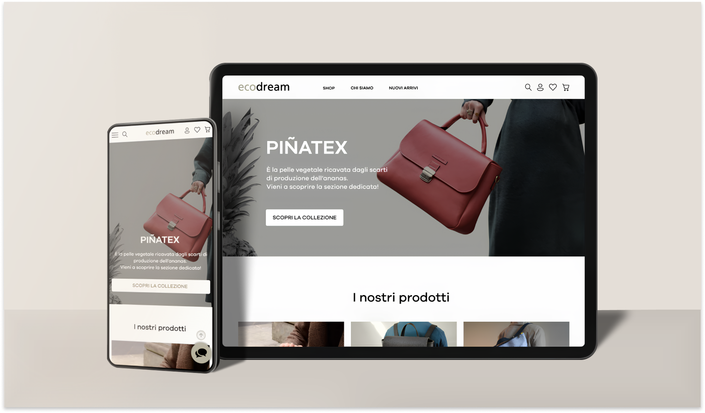
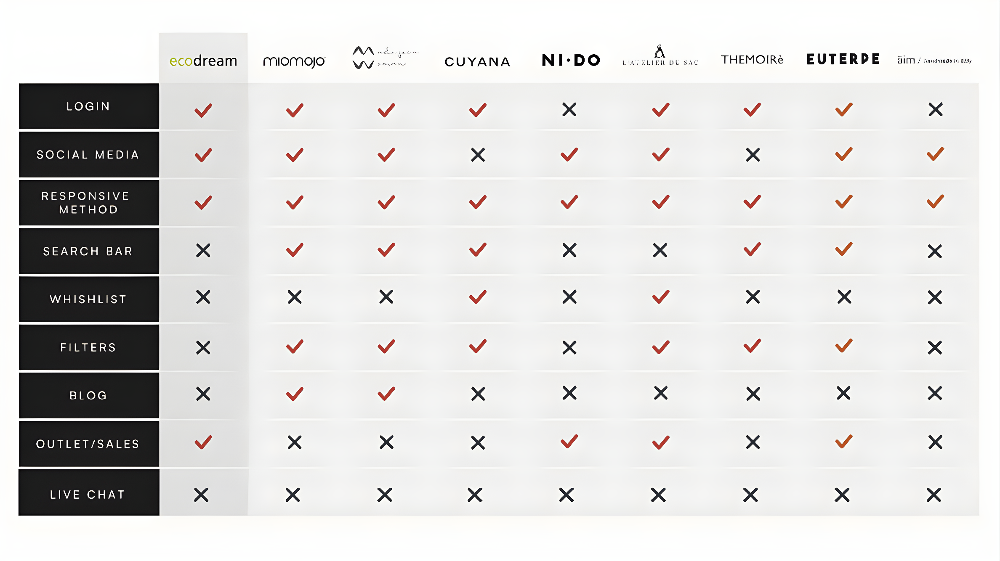
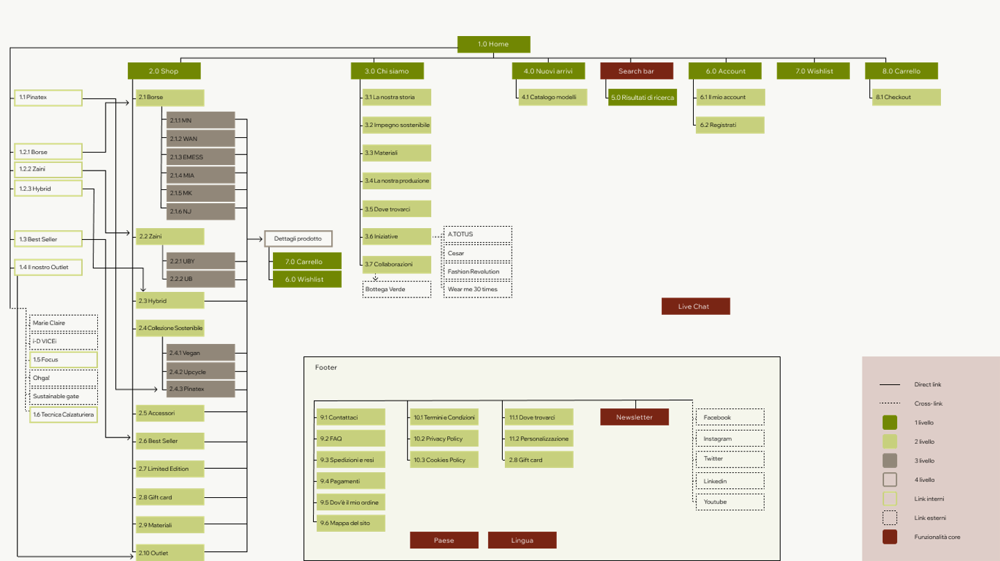
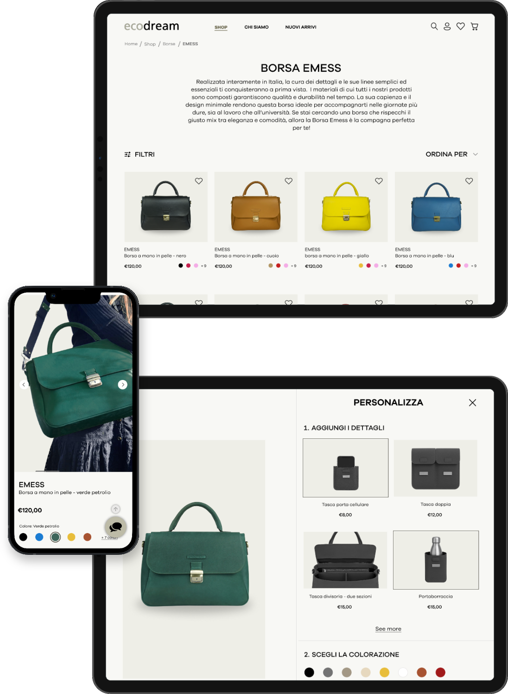

UX/UI case study
Ecodream
Redesign di un e-commerce sostenibile dedicato a borse e accessori. Il progetto lavora su ricerca, architettura informativa, wireframe, prototipo e design system.

Un e-commerce da rendere più chiaro, affidabile e coerente.
Il punto di partenza era un brand con valori forti ma un’esperienza poco ordinata: gerarchie deboli, informazioni non immediate e percorso d’acquisto frammentato.
Ho impostato il lavoro come un processo end-to-end: analisi del sito esistente, valutazione euristica, ricerca utente, personas, journey map, sitemap, wireframe e UI finale.

01 · Discovery
Capire le frizioni prima di ridisegnare.
L’analisi iniziale ha messo in evidenza problemi di gerarchia, navigazione e feedback. Prima della UI ho lavorato sulla struttura: cosa serve all’utente, cosa va anticipato e cosa può essere semplificato.

02 · Architettura
Dare ordine al catalogo.
La sitemap riorganizza contenuti, categorie e percorsi. L’obiettivo era ridurre lo sforzo cognitivo e rendere più immediata la relazione tra prodotti, materiali e valori del brand.

03 · Wireframe
Tradurre la struttura in esperienza.
I wireframe definiscono le pagine principali: homepage, shop, scheda prodotto, personalizzazione, carrello e checkout. Qui la priorità è stata la chiarezza delle azioni.

04 · UI System
Costruire una visual identity più solida.
La UI finale lavora su colori più neutri, tipografia leggibile, componenti coerenti e un tono visivo più adatto a un brand sostenibile ma contemporaneo.
Risultato.
Ecodream è il progetto più completo del portfolio: mostra il passaggio dalla diagnosi del problema alla costruzione di un sistema visivo e funzionale più leggibile.